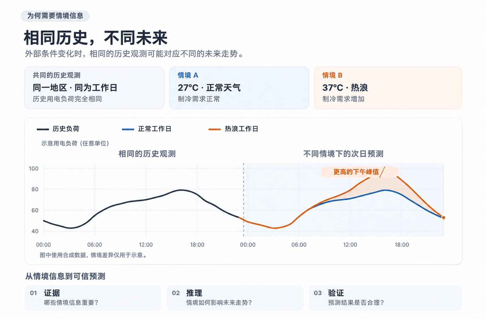

大模型驱动的情境感知时间序列预测：从模式识别到认知推理
10:10–12:10 · UTC+8Grand Ballroom 1 · 沈阳富力万达文华酒店添加到日历
动态
本教程的幻灯片即将在此页面公开。
简介
本教程介绍大模型驱动的情境感知时间序列预测的研究进展，探讨如何从历史模式识别走向基于情境的认知推理。现实中的预测受到时间规律、外部条件、事件、领域知识和系统状态的共同影响。要把附加特征用作预测证据，需要先判断它们能说明什么。哪些证据与预测有关，哪些证据值得信赖，又该怎样验证它们对未来的影响？教程从多模态语义理解、基于证据的慢思考推理，以及智能体与工具和环境的交互三个方面展开，讨论电力负荷、可再生能源发电、交通、工业和科学预测中的应用，以及尚待解决的挑战与研究方向。
相同历史，不同未来

阅读中文版案例说明
以同一地区的次日用电需求为例，两种情境采用同一段历史观测，并假设次日均为普通工作日。天气正常时，用电负荷可能延续常见的日内变化规律。热浪期间，制冷用电增加，下午的负荷峰值可能升高，高负荷时段也可能延长。
情境 A · 正常天气下的工作日
最高气温 27°C
制冷需求正常，负荷延续常见的日内变化规律。
情境 B · 热浪下的工作日
最高气温 37°C
制冷需求增加，下午峰值更高，高负荷时段也可能延长。
预测曲线基于合成数据，仅用于示意。
三个关键问题
预测的难点在于识别相关证据，解释它如何影响负荷曲线，并验证预测结果是否合理。
- 证据 · 什么信息重要？
- 哪些外部信息与预测相关，且值得信赖？
- 推理 · 影响从何而来？
- 情境证据如何影响未来变化的方向、幅度和时间？
- 验证 · 预测能否信赖？
- 预测结果是否符合现有证据和已知的系统约束？
教程提纲
教程组织者
参考文献
- Mingyue Cheng, Zhiding Liu, Xiaoyu Tao, Qi Liu, Jintao Zhang, Tingyue Pan, Shilong Zhang, Panjing He, Xiaohan Zhang, Daoyu Wang, Jiahao Wang, Enhong Chen, “A Comprehensive Survey of Time Series Forecasting: Concepts, Challenges, and Future Directions.”
- Xiaoyu Tao, Mingyue Cheng, Ze Guo, Bokai Pan, Qi Liu, Shijin Wang, Enhong Chen, “CastClaw: A Human-in-the-Loop Autonomous Agent for Industry Time Series Forecasting.”
- Bokai Pan, Ruijie Yang, Mingyue Cheng, Jiahao Wang, Xiaoyu Tao, “CastWorld: Benchmarking Context-Aware Agentic Time Series Forecasting Beyond Predictive Accuracy.”
- Mingyue Cheng, Xiaoyu Tao, Qi Liu, Ze Guo, Enhong Chen, “Position: Beyond Model-Centric Prediction — Agentic Time Series Forecasting.”